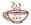

KAWA is an IDE (Integrated Development Environment) to build Java applications and applets on Win32 machines. KAWA supports Windows 95, Windows 98 and NT 4.0 platforms. We are serving the Java community since 1996 with some powerful tools and are committed to releasing stable and intuitive products.
KAWA is very extensively used by various universities around the world and by many Fortune 500 companies in the USA. KAWA is the most preferred Java development tool for individuals and companies committed to doing 100% pure Java development.
KAWA provides a powerful, easy to use and intuitive environment for Java development. KAWA is a wrapper on Sun's JDK and therefore 100% compatible with any JDK version. (1.0.X - 1.2) Some of the highlights of the product are:
Project Management
Syntax coloring editor
Integrated Debugger
JDB wrapper
Context sensitive JDK help
Customizable Help Index
Class Browser
Java based Plugin Architecture
For more information about KAWA, please visit our Web site at: http:\\www.tek-tools.com\kawa